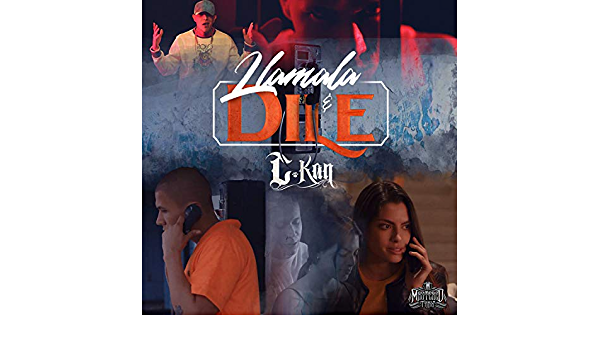
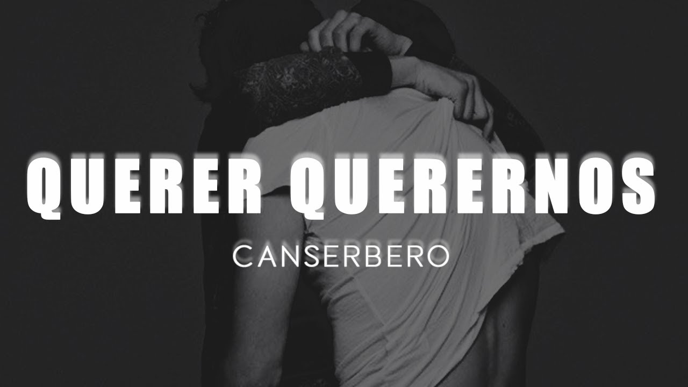
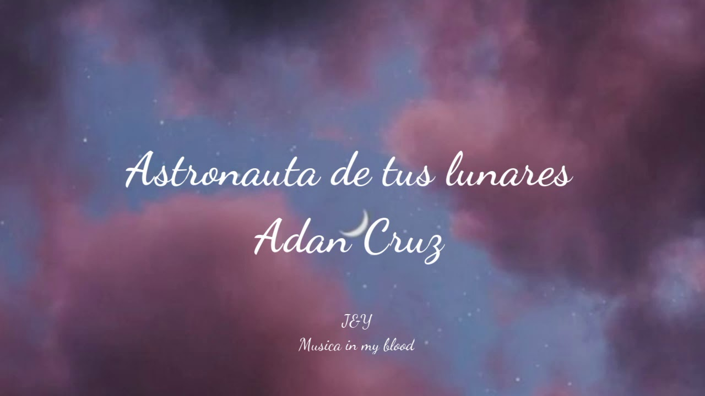
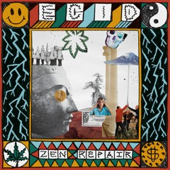
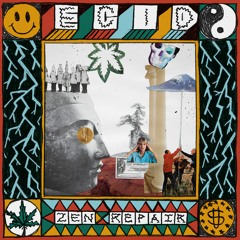
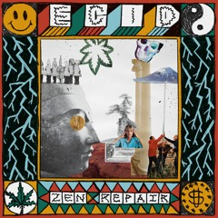

EL PORTAL DE MUSICA
Aqui encontraras todo lo que te gusta, Generalmente pasamos largas horas al día tratando de encontrar nueva música, pero es difícil coincidir con una página que nos ofrezca lo que buscamos. Por esta razón, a continuación te presentamos la mejor musica y aplicaciones para escuchar y conocer buena música.
Misión
“tienes a tu disposición un montón de información para conocer las últimas tendencias musicales y obtener una visión general de las páginas de música más importantes”
Mas escuchado
- C Kan-LLAMALA Y DILE
- Zona Ganjah-VIBRA POSITIVA
- Canserbero- QUERER QUERERNOS
- Canserbero-MUNDO DE PIEDRA
- Adan Cruz- ASTRONAUTA DE TUS LUNARES
- Justin Quiles- GUCCI FENDI
- Ryan Catro-JORDAN
- Leonardo Lira-ACID TRACK



 

